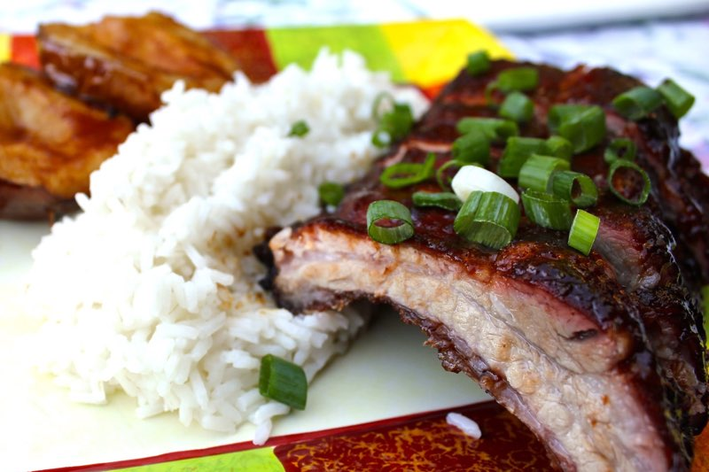
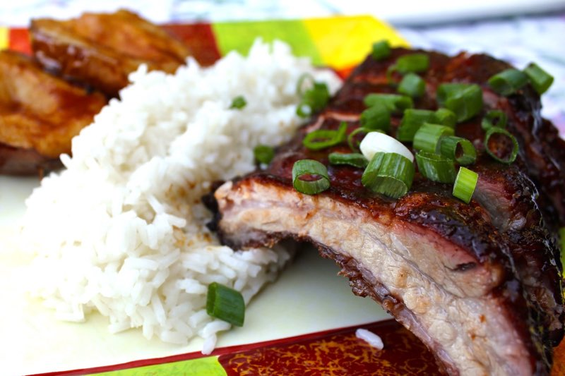

\
Recipes!
Asian inspired bbq dish!
Back to previous page
 

Growing up, this is what my mom always cooks for me and my brother whenever we come home from a sports tournament. We would always eat this with white rice with a soda on the side!
Flavored with soy sauce, 5 chinese spices, ginger, and a secret ingredient, this dish is easy and cheap for you college kids! It's perfect when there is an upcomming BBQ! You can either
use a charcoal grill to give it a crispy sweet smokey flavor or just pop it in the airfryer for a quick and easy meal!
This sauce works well with boneless chicken thighs, pork belly, pork ribs, and beef. You can use chicken breast if you would like but I reccomend chicken thighs because of how juicy and
flavorful than boneless chicken breast. But for this dish, we will be using boneless chicken thighs.
Ingredients
Steps
- Wash the chicken and pat down the excess water with a paper towel.
- Set the chicken on a clean surface (cutting board) and pluck the leftover feathers.
- Put the chicken in a large bowl (mixing bowl preferbly).
- Dump all the ingredients except for the honey/sugar.
- Mix well.
- Marinate at least 30 minutes before cooking! (What I like to do is cut off a piece of marinated meat and cook it to see if the seasoning is enough).
After the marinating process is done, time to start cooking! I will be teaching you guys how to cook with the air fryer!
- Place one or two chicken pieces (skin side up) in the airfryer at 400 degrees farenheit for 10 minutes.
- After the timer goes off, flip the peices and put it in for another 5 to 10 minutes, check regulary.
- While that is cooking, pour the honey/sugar into a seperate bowl and pour in a tiny bit of hot water. Stir until the honey/sugar is dissolved.
- When the timer goes off, flip the chicken pieces once more(skin side should be facing up) and brush the honey/sugar water on the skin.
- Put it in the airfryer for another 2-3 minutes until the skin looks brown and crunchy
- Serve with rice or ramen!
If you are using an oven instead, preheat the oven to 400 degrees farenheit for 15-20 minutes each side.